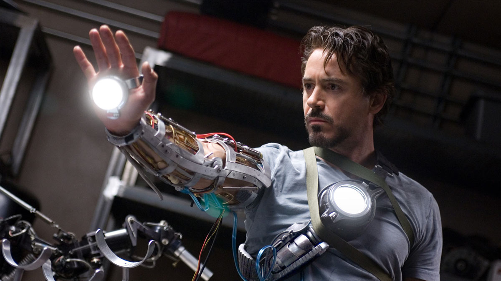

Tony Stark is an American billionaire playboy and ingenious engineer who suffers a nearly-fatal chest injury during a kidnapping in which his captors attempt to force him to build a weapon of mass destruction. Stark's capture leads to his creation of the iconic arc-reactor embedded in Stark's chest as well (which is used to preserve his health and mitigate the effects of the injury) as well as the development of a powered suit of armor which Stark uses to escape captivity. He later uses the suit and successive versions to protect the world as Iron Man. Through his corporation,Stark Industries, Stark has created many military weapons, some of which, along with other technological devices of his making, have been integrated into his suit, helping him fight crime.
Tony Stark appears in a series of comics that started in 1968 and is currently in development. Stark also features in other comics related to The Avengers and S.H.I.E.L.D as well as a movie series .
